- Home
- Welcome to KCD
Welcome to King's College Doha
Your Journey Begins Here
At King’s College Doha, education is about far more than academic achievement. It is about encouraging courage, nurturing curiosity, and empowering every child to thrive with confidence in a rapidly changing world.
Inspired by the rich heritage of King’s College UK and shaped by the vibrant spirit of Qatar, we combine outstanding British education with exceptional pastoral care, specialist teaching, and a wealth of opportunities beyond the classroom. From their very first day, every student is known, valued, and supported to discover their strengths, pursue their passions, and fulfil their potential.
This guide contains everything you need to help your family settle seamlessly into life at King’s College Doha, from essential information and practical guidance to key resources that will support a smooth and successful start.
We are delighted to welcome you to our community and look forward to sharing this exciting journey with you.
Jump down to:
- Principal’s Welcome
- Parents Handbook
- Term Dates
- School Timings
- Campus Safety & ID Lanyards
- School Drop Off and Pick Up
- School Bus Service
- Uniform Guidelines
- iSAMS Parent Portal
- School Communications
- Medical History
- Personal Devices
- Admissions Support
Principal’s Welcome
Dear Parents,
It is my pleasure to welcome you to King’s College Doha and thank you for placing your trust in us as partners in your child’s education.
Inspired by the rich heritage of King’s College UK, we provide an outstanding British education that encourages academic excellence, curiosity, confidence, and character. Guided by our core message, Encourage Courage, we support every student to embrace challenges, discover their strengths, and thrive both in and beyond the classroom.
Through specialist teaching, strong pastoral care, and a warm, inclusive community, every child is known, valued, and encouraged to achieve their full potential.
On behalf of all our staff, I extend a very warm welcome to the King’s family. We look forward to supporting your child throughout their journey with us.
Warm regards,
Kate Jackson
Principal
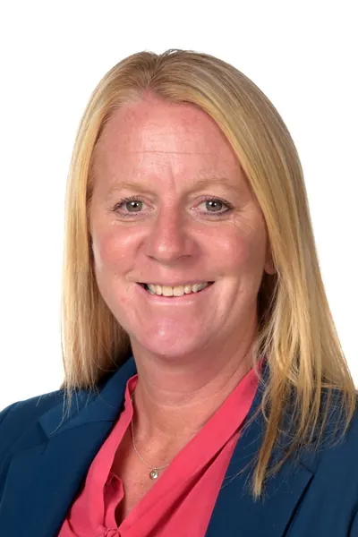
Parents Handbook
Our Parent Handbook brings together all the key information you need for a smooth start to the academic year. From school routines and policies to uniform guidelines and enrichment opportunities, it helps you feel informed and prepared.
We encourage you to take a few moments to read through it before the start of term.
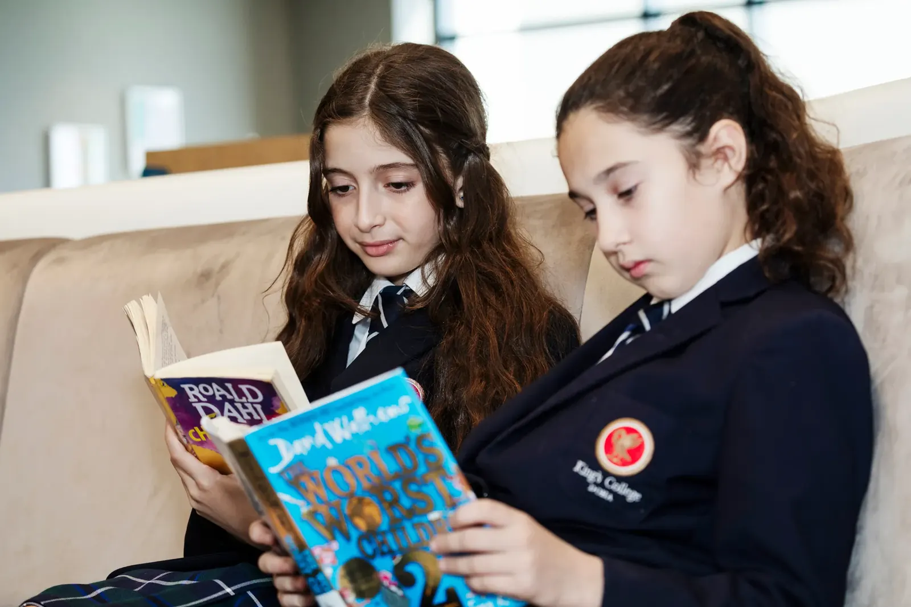
Term Dates
Stay up-to-date with our academic calendar. Find out the start and end dates for each term, including half-term breaks and holiday periods.
View Academic Calendar
School Timings
Ensure your child is punctual and ready for each school day. Learn about our daily schedules, including arrival and dismissal times.
View School Timings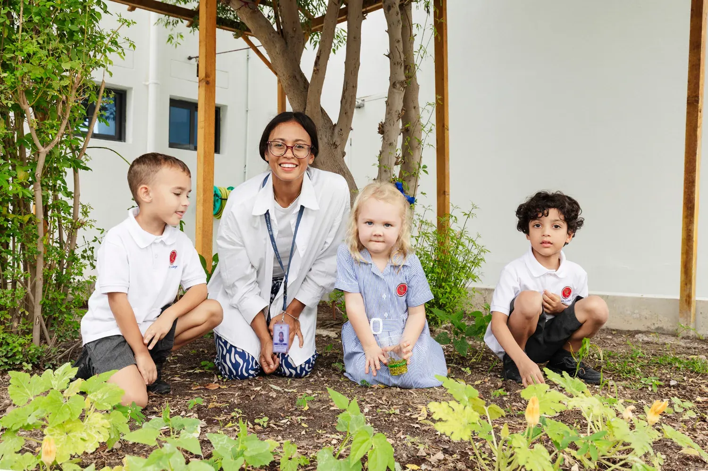
Campus Safety & ID Lanyards
At King’s College Doha, safeguarding is a shared responsibility. All pupils, parents, staff and authorised visitors must wear a clearly visible, colour-coded ID lanyard while on campus. These lanyards are essential for access control and ensure everyone on site is accounted for.
School Drop Off and Pick Up
Al Thumama Campus
Drop Off
Parents may park and accompany children to their classrooms via Gate C (Pre-School and Reception) or Gate E (Years 1 and 2).
Collection
Children are collected from their classrooms. On CCA days, pupils not yet collected will be taken to the Aftercare Club from 3.30pm.
Mesaimeer Campus
Drop Off
Parents of Years 3 to 6 may park and walk children to their classrooms via the Garden Gate. Pupils in Year 7 and above should use the main entrance or Sports Hall drop off zone.
Collection
After 3.00pm, remaining pupils will be supervised in designated front-facing classrooms overlooking the car park. Clear signage indicates each year group for easy collection.
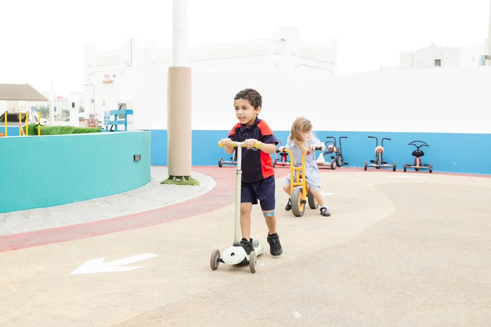
School Bus Service
In partnership with Smart Step Transportation Services, our school transport service ensures peace of mind. With cameras, GPS tracking, experienced drivers and female bus attendants and supervisors, every journey is managed with precision, care and the highest safety standards.
We also offer a shuttle bus between the Al Thumama and Mesaimeer campuses for siblings split across both sites.
For more information on our school bus services including how to register and bus schedules, please refer to the Parent Handbook.
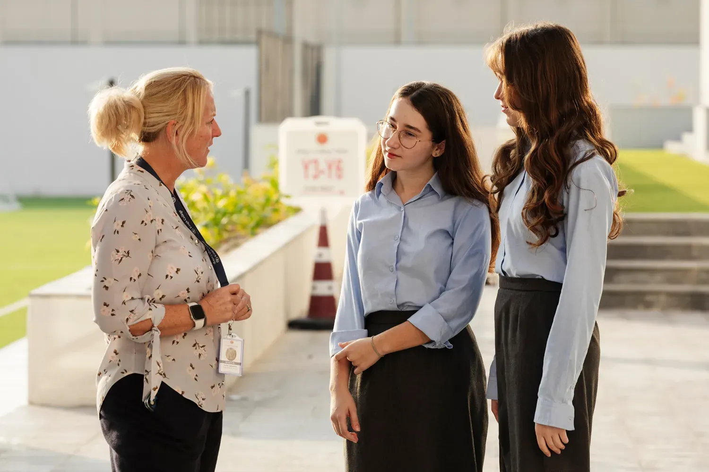
Uniform Guidelines
At King’s College Doha, our uniform reflects pride, belonging and shared identity. We uphold high standards that support comfort, confidence and readiness to learn.
Our uniform supplier is Zaks, and uniforms are available to purchase online or in-store. The Zaks uniform shop is conveniently located just 5 minutes from the Mesaimeer Campus, click here to view the location.
For full details please refer to the Parent Handbook.
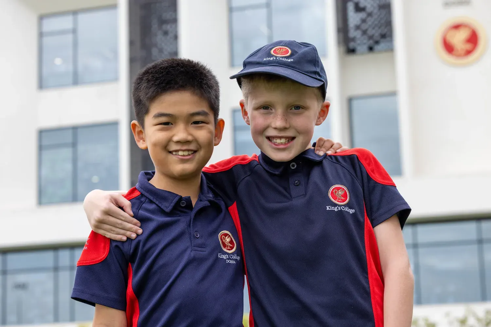
iSAMS Parent Portal
Through the iSAMS Parent Portal you will be able to access timetables, reports, attendance, announcements and Parent Teacher Consultation bookings.
The IT Team will provide you with your login details.
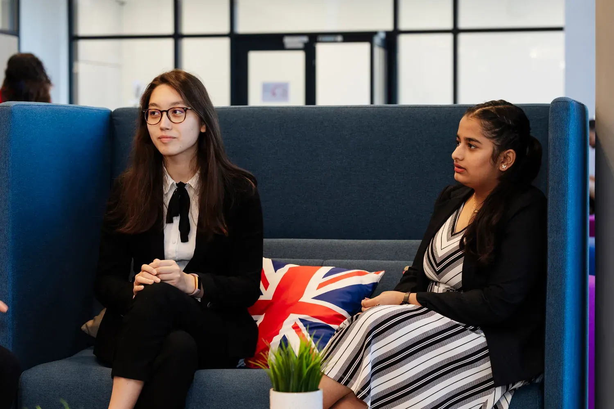
School Communications
King’s Connect is our weekly newsletter, keeping families informed with important updates, upcoming events, and celebrations of student achievement. Each edition also features year group highlights, giving parents a valuable insight into what pupils have been learning, exploring, and enjoying throughout the week.
We also communicate with parents via direct email and our school app. To find out more about school communications please refer to the Parent Handbook.
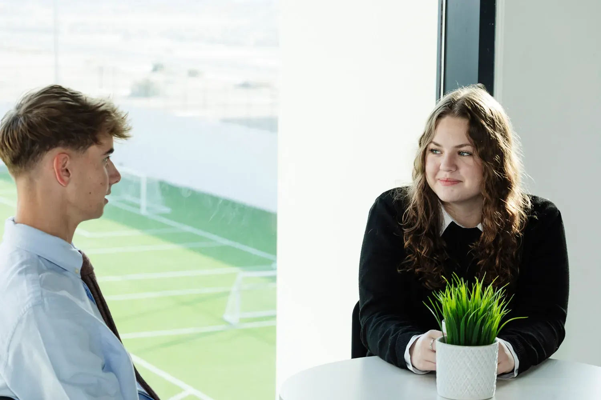
Medical History
To ensure your child’s safety and care, the Ministry of Public Health requires all new pupils to submit completed medical forms and updated vaccination records before starting school.
Please use the links below to complete the Medical Form and Vaccination Form.
For any questions or concerns, please contact our school nurse at nurse@kingscolllegedoha.com.
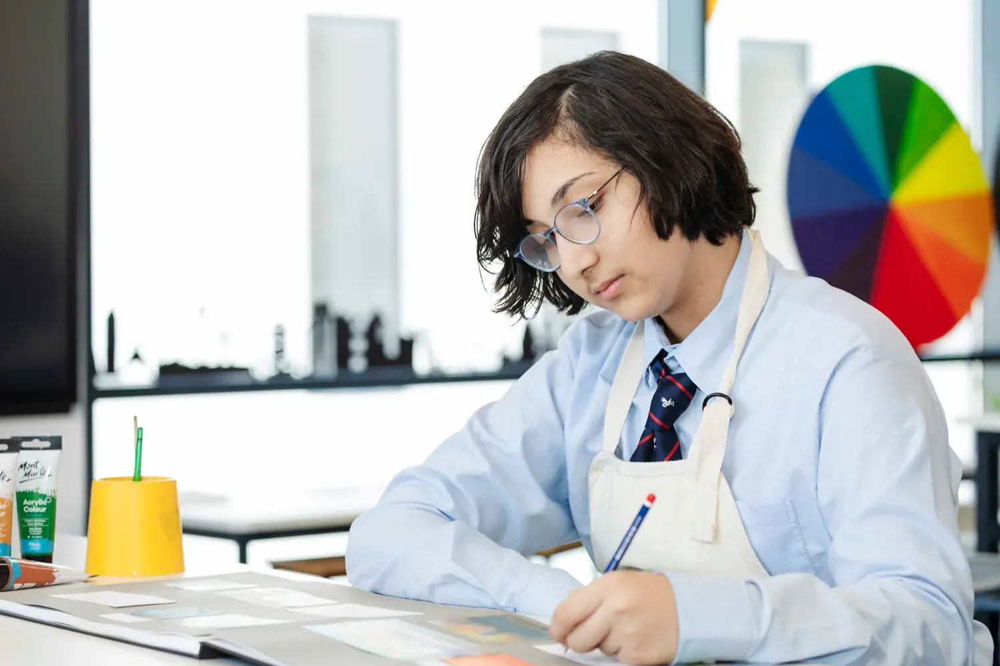
Personal Devices
To support a focused learning environment, pupils are not permitted to use mobile phones during the school day. Pupils in Years 5 to 11 are issued with a Yondr pouch to securely store their devices until the end of the school day.
Pupils below Year 9 are not required to bring a personal device to school. From Year 9 onwards, pupils are encouraged to bring their own device to support independent learning, research, and coursework, with Sixth Form pupils making regular use of these during study periods.
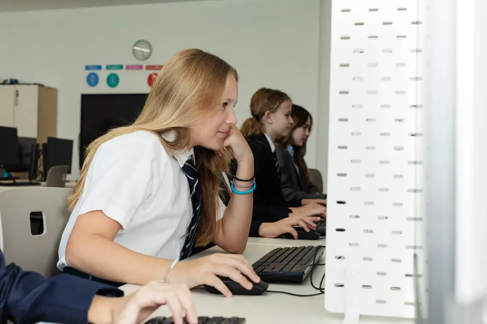
Admissions Support
In preparation for the new academic year our Admissions Team are here to support you.
If you have any questions, please contact us at admissions@kingscollegedoha.com or call +974 4496 5888 or +974 6006 2023.
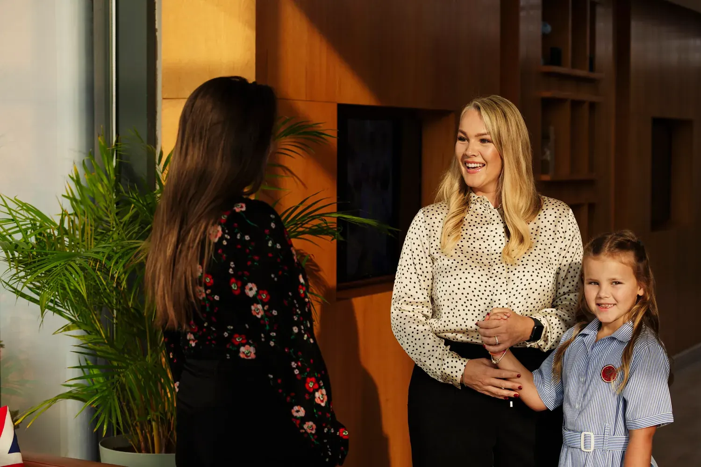